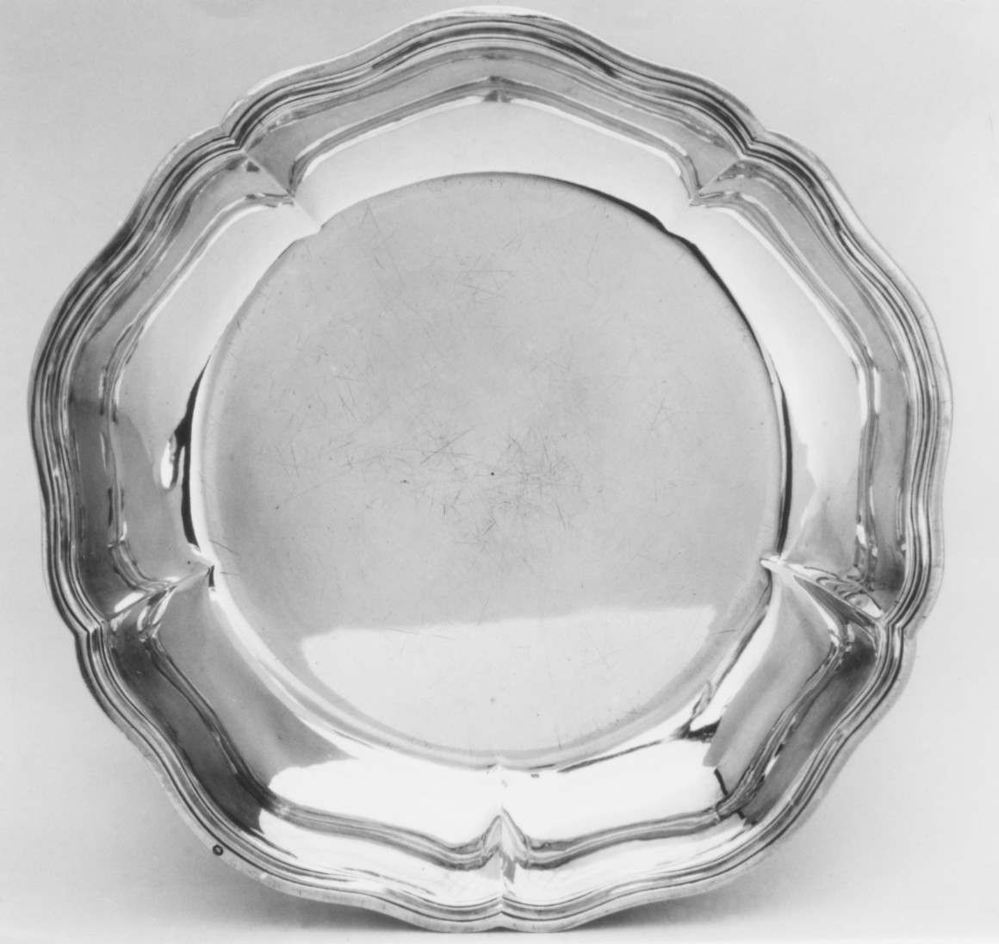
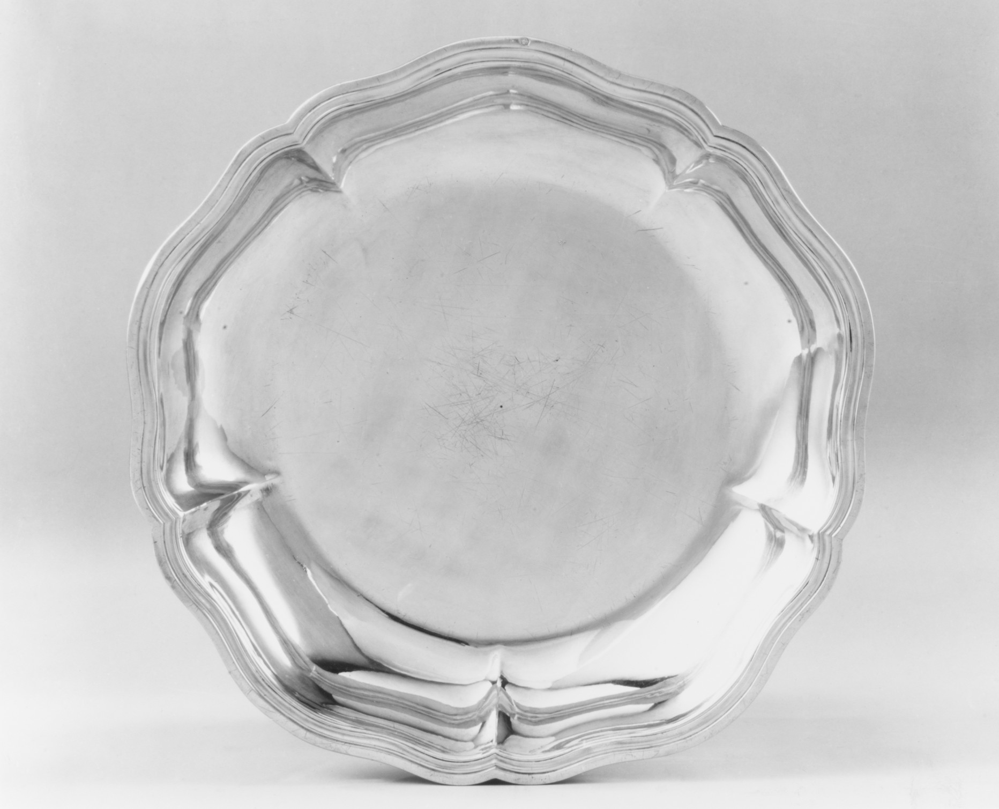

01
Object entry
48.187.170
Jean-Louis Morel, Dish (one of a pair), 1763–64. Silver.
One record. Two views. One dish named as part of a pair.
Jean-Louis Morel, Dish (one of a pair), 1763–64. Silver.


“one of a pair”
The number counts dishes in the title's relation. A neighboring Met entry, 48.187.169, has the same title, maker, and date; I read it as the partner in Study 06.